Pooling of any kind beats bilateral contracting, in every phase. Figure 4 and Table 5 give the main comparison with each phase's default fleet (3, 6 and 9 vehicles). In-house fleets deliver urgent cargo with a 90th-percentile delay of 42 h in Phase 1, 49 h in Phase 2 and 23 h in Phase 3; the marketplace brings those to 27, 15 and 8.5 h, paired differences of −15.3 ± 5.9, −33.7 ± 12.0 and −14.1 ± 5.3 h (95% CI over 30 seeds). The share of urgent items delivered within a day rises by 16, 13 and 8 absolute points. The in-house rule also leaves 4–12 tonnes of landed cargo undelivered at year end in Phases 2 and 3, because items heavier than 1.5 t belong to owners whose contracted carrier has no hauler while another company's hauler sits idle.
Among pooled rules the ordering is consistent but needs many replications to resolve. With 30 seeds the marketplace's advantage over pooled greedy on the 90th-percentile urgent delay is −2.9 ± 6.5 h in Phase 1, −4.9 ± 4.6 h in Phase 2 and −1.1 ± 1.1 h in Phase 3; against batched assignment it is 0.0 ± 0.6, −3.3 ± 3.9 and −0.8 ± 1.1 h. Only the Phase-2 difference against greedy is distinguishable from zero at that sample size. Section 6.14 replicates the Phase-2 cells until their 99% confidence intervals settle ({N_LONG_WORDS}): the settled mean urgent delays are {INH_MEAN} ± {INH_MEAN_HW} h in-house, {GRD_MEAN} ± {GRD_MEAN_HW} h pooled greedy, {BAT_MEAN} ± {BAT_MEAN_HW} h batched assignment and {MKT_MEAN} ± {MKT_MEAN_HW} h marketplace (99% CIs), so the marketplace is {MKT_VS_GRD_PCT}% faster than greedy pooling on the mean and {MKT_VS_GRD_P90_PCT}% on the 90th percentile ({MKT_P90} against {GRD_P90} h), with a same-day service level of {MKT_SL} against {GRD_SL}. The unconstrained 16-vehicle autonomous fleet delivers urgent items in 2.0–2.4 h on average, which is essentially travel and handling time; default fleets therefore spend most of the urgent delay waiting for a vehicle to be free, lit and off other duty, not driving.
Where the marketplace differs most is in what it can move and when it drives. With LTV-class rovers and one hauler, 10–17% of landed cargo mass in every phase is heavier than any single vehicle. The marketplace's team lifts cut that to 0% in Phases 1 and 3 and 2.8% in Phase 2 (the residual is 13–15 t elements that even a hauler plus two LTVs cannot carry together). Vehicles without night capability are caught by the lunar night 0.2, 1.3 and 4.1 times a year under greedy dispatch and 0, 0.13 and 0.17 times under the marketplace, each event costing a job about 106 h. Bundling cuts trips by 4–7%. The price is a deliberate one: deferrable bulk lots wait 17–35 h on average under consolidation against 3–12 h under greedy dispatch. Operator hours fall slightly in Phases 1 and 2 and rise by 263 ± 29 h (34%) in Phase 3, where the generalised-cost bid lets cheap, slow, remotely operated vehicles win bulk lots; Section 6.9 shows that tuned weights reduce this increase.
Pooling also spreads the work. The Gini coefficient of revenue across vehicle owners is 0.49–0.72 under in-house contracting and 0.20–0.46 under the pooled rules. Empty kilometres are about half of all kilometres under every rule, far above the 16–21% deadhead of Earth trucking, because almost all cargo flows one way, from pads to base; return items are too few to change this.
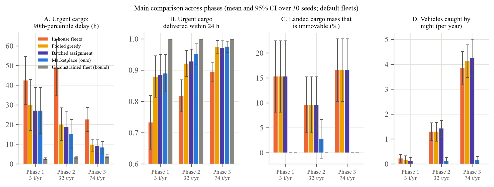
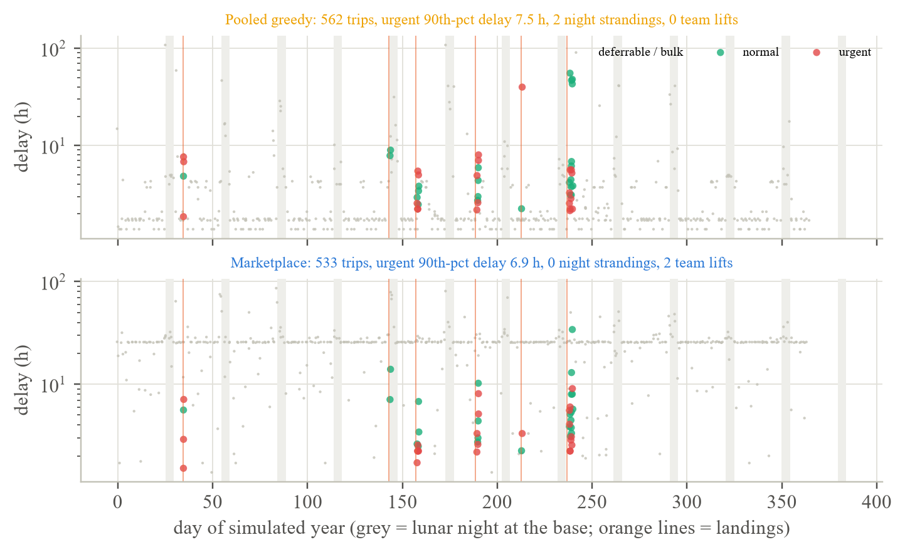
Because the fleet is the cost, the practical question is not which rule delivers fastest with a given fleet, but which rule meets a service target with the fewest vehicles. Figure 6 sweeps fleets of 2 to 8 vehicles at Phase-2 demand. Every pooled rule reaches a 90% same-day service level for urgent cargo with four vehicles (marketplace 0.940 ± 0.030, batched assignment 0.927 ± 0.036, pooled greedy 0.921 ± 0.036); in-house fleets peak at 0.87 with eight. In annual fleet cost at our unit prices, four vehicles are $162 million a year and eight are $357 million, so pooling is worth at least $195 million a year at this demand level, and in-house contracting does not buy the service level at any fleet size we tried. Below four vehicles no rule reaches the target: with two LTVs the 90th-percentile urgent delay is 47–48 h for the pooled rules and 67 h in-house, because a single landing can release more items than two rovers can clear before the next night. Among the pooled rules the marketplace has the lowest 90th-percentile delay at four, six and eight vehicles (16.9, 15.4 and 9.3 h against 19.4, 20.2 and 11.0 h for greedy), but the differences at 30 seeds are within confidence intervals; the settled Phase-2 estimates of Section 6.14 confirm the ordering.
System cost per kilogram of all mass moved (including regolith) rises almost linearly with fleet size, from about $175 with 2 vehicles to about $675 with 8, because demand is fixed and the fleet is 99% of the cost. Per kilogram of landed cargo the picture depends on what gets moved: with two LTVs the marketplace delivers heavy items by team lift that greedy dispatch leaves stranded, so its landed-kg cost is $21,000 against $24,000 for greedy and $26,000 in-house; with four vehicles the pooled rules are at $34,000 per landed kilogram and in-house at $71,000, because in-house leaves 11 t undelivered.
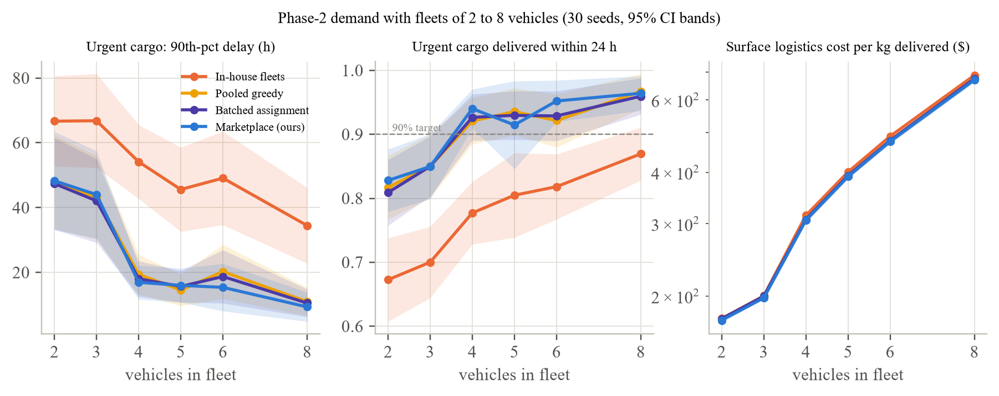
Figure 7 holds the fleet fixed at six vehicles and splits it among one to six owners, with each owner's cargo contracted to its own vehicles under the in-house rule. With a single owner the in-house rule and the marketplace are statistically indistinguishable: the paired gain in urgent 90th-percentile delay is 0.7 ± 3.0 h with no other duties, 3.9 ± 4.1 h at 30% other duties and 3.3 ± 6.0 h at 60%. The gain grows monotonically with fragmentation. With six owners it is 23 ± 9 h, 44 ± 8 h and 52 ± 11 h at the three duty levels; the in-house same-day service level falls from 0.96 to 0.88, 0.72 and 0.51 while the marketplace's stays at 0.96, 0.955 and 0.91 regardless of how many owners there are. Other duties amplify the effect because a vehicle committed to its owner's science traverse cannot serve its owner's cargo, while under pooling a neighbour's idle vehicle can.
This is the thin-market result we expected from Earth freight, but in a sharper form. The lunar market will have very few participants, so whether pooling matters depends almost entirely on how many of them there are. If NASA's two LTV providers and one or two commercial payload companies each run their own vehicles for their own cargo, the simulations say that a shared dispatch layer roughly halves urgent-cargo delay and keeps every owner's heavy items moving; if a single integrator owns the whole fleet, the dispatch layer adds little that a good in-house scheduler would not. Section 6.13 turns this into a quantitative law.
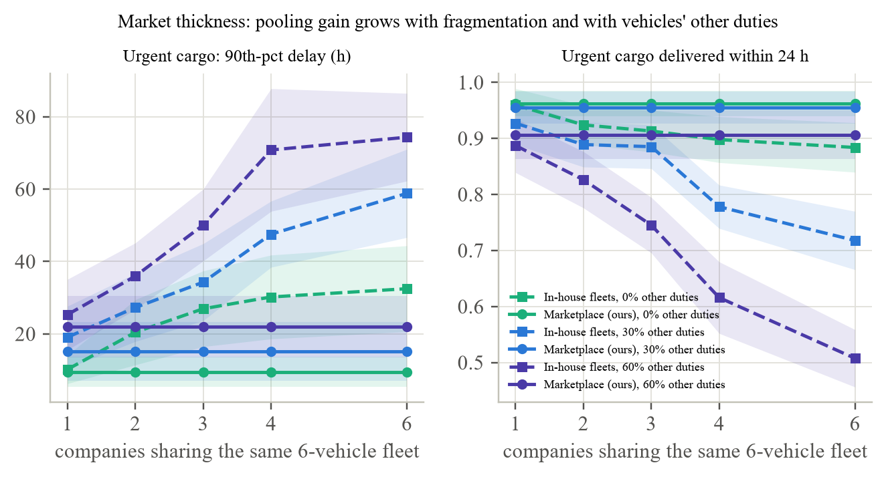
NASA's statement that no planned vehicle can relocate a large element translates, in the simulations, into a large share of immovable mass. With four LTV-class rovers and no hauler, 54 ± 8% of landed cargo mass in Phase 2 and 69 ± 5% in Phase 3 is heavier than any vehicle (Figure 8). Team lifts by two or three LTVs, which can carry up to 3 and 4.5 t together, recover about half of that: the immovable share falls to 29 ± 7% and 42 ± 7%. Replacing one LTV with a 10-tonne hauler leaves 10% and 17% immovable under greedy dispatch (the 12–15 t elements), and 2.8% and 7.5% under the marketplace, where a hauler and two LTVs lift together. Two haulers remove the gap entirely in both phases. Items that can be moved are not slowed by the team lifts: the urgent 90th-percentile delay with one hauler is 14.8 h under the marketplace against 15.9 h under greedy dispatch in Phase 2.
We read this as follows. Coordination software can stretch a fleet of 1.5-tonne rovers to the 2–3 tonne items that MK1-class landers deliver, which is most of the Phase-2 manifest by count. It cannot reach the 6–15 tonne elements that define Phase 3. One heavy vehicle, dispatched as part of a shared pool so that it also lends its capacity to others' items, closes most of the remaining gap; a second closes all of it. Section 6.12 generalises this into a capacity ladder that does not depend on the fleet we happened to simulate.
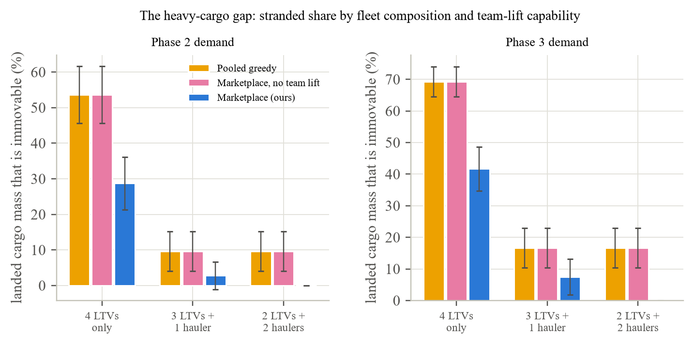
Figure 9 compares a five-vehicle Phase-2 fleet operated entirely by Earth teleoperation, supervised autonomy or full autonomy, across round-trip latencies from 2.6 s (direct light time) to 1,323 s (Mars at its farthest). With supervised or full autonomy the latency does not matter in our model: urgent 90th-percentile delay is 12.1 and 11.9 h at every latency, and operator hours are 342 and 63 per year. Teleoperation is workable at lunar latency but costly: with two operators the urgent 90th-percentile delay is 29 h at 2.6 s, 38 h at the 5 s default and 48 h at 8 s, rising to 104 h at a relayed 16 s; operator consoles are staffed 2,100–5,900 hours a year, that is one to three full-time positions for five rovers. A single operator for five teleoperated rovers is a bottleneck in its own right: jobs wait for an operator 280–580 times a year and the 90th-percentile delay roughly doubles relative to two operators. At Mars-like latencies teleoperated speed falls to a few tens of metres per hour and the fleet delivers only 2–16% of the year's mass.
Two conclusions follow for a marketplace that dispatches other people's vehicles. First, the vehicles' autonomy level is a market-design variable: a pool of teleoperated rovers needs the marketplace to schedule operators as well as vehicles, and even then runs 2–3 times slower on urgent cargo. Second, nothing that works by teleoperation on the Moon transfers to Mars; the Mars column in Figure 9 is a different problem.
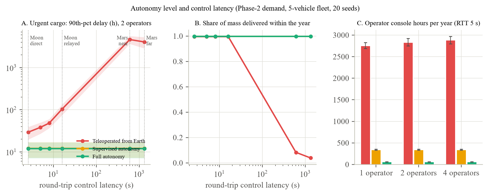
In this suite three of five vehicles accept only the common cargo standard and two accept both, while the share of landed cargo built to the common standard varies from 50% to 100% (Figure 10). Nothing becomes immovable, because every item has at least two compatible vehicles, but delays grow as compatibility shrinks, and they grow most for the rules that cannot route around it: at 50% common-standard cargo the in-house urgent 90th-percentile delay is 54 h against 46 h at full compatibility, pooled greedy's is 22 h against 15 h, and the marketplace's is 16.9 h against 16.0 h. The service level for urgent items moves from 0.75 to 0.81 in-house, from 0.91 to 0.94 under greedy pooling and stays at 0.92–0.93 under the marketplace. The marketplace is the least sensitive because its auction prices the two flexible vehicles into the jobs only they can do, whereas greedy dispatch spends them on whatever is nearest.
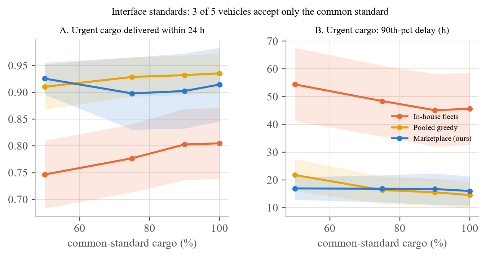
Figure 11 sweeps three environment factors with a five-vehicle Phase-2 fleet. Night. Delay grows steeply with the dark share of the cycle: at 30% dark the urgent 90th-percentile delay is 47 h under greedy dispatch and 30 h under the marketplace (paired difference −18 ± 10 h); at 50% dark, 63 against 58 h (−5 ± 12 h, not distinguishable from zero because at that point half the month is lost to everyone). The difference is night awareness: greedy dispatch sends vehicles out that cannot return before dark 1.1–1.3 times a year regardless of the dark share, and each such event removes the vehicle and its cargo for the whole night. Reliability. Quartering the MTBF (to about 125 h for an LTV, 12 faults a year across the fleet) raises the greedy 90th-percentile delay from 15 to 21 h and the marketplace's from 16 to 19 h; the paired difference, −1.5 ± 3.9 h, is not distinguishable from zero. Faults matter less than nights because recovery takes 12–36 h rather than 106. Bulk flows. Raising regolith and feedstock flows from zero to 3,000 t a year raises utilisation from 0.5% to 16–17% and leaves urgent delay roughly unchanged until the top level, where both rules degrade to about 34 h; the marketplace makes 5–14% fewer trips, more as the flows grow, and the greedy rule's night strandings rise to 7.6 a year. Even at 3,000 t a year the fleet is idle five sixths of the time, which is a reminder that these vehicles will be bought for capability, not for throughput.
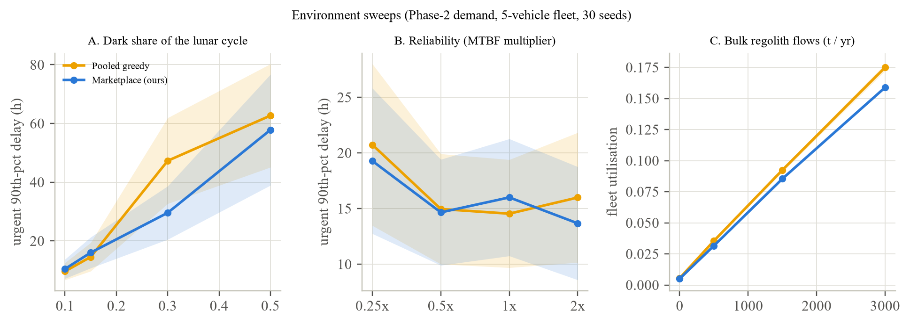
Figure 12 and Table 6 remove one marketplace component at a time with tight fleets (four vehicles in Phase 2, six in Phase 3). Two components carry the urgent-delay result in Phase 3, where cargo is dense enough for them to act: without bundling the 90th-percentile delay rises by 4.6 ± 4.4 h with 131 more trips a year, and without consolidation there are 60 more trips; both removals also reduce operator hours by 340–370 a year, because consolidated loads tend to go to the slower, remotely operated vehicles that win them on price. Night awareness carries the night result: removing it brings back 1.0 ± 0.3 and 5.8 ± 1.2 night strandings a year and adds 36 ± 12 and 275 ± 60 operator hours (hibernating vehicles keep their operators booked). Team lift carries the stranded-mass result and costs nothing measurable on urgent delay; in Phase 3 its removal improves urgent delay by 1.6 ± 2.6 h because vehicles are no longer tied up in pairs. Three components did nothing measurable in these scenarios: anticipatory staging (+0.3 ± 0.5 and −1.4 ± 1.5 h when removed; Section 6.11 explains why), the priority credit (+0.2 ± 0.3 and +1.4 ± 3.8 h) and backhaul (0.0 and +0.2 ± 0.8 h). The value-of-time term in the bid already orders urgent items first, and return items are rare enough that a vehicle seldom finds one at its last stop. We keep all three in the mechanism for completeness but make no claim for them.
The batching window behaves as the thin-market theory predicts [11]. Dispatching on every event is best in both phases; windows of 0.5–2 h add 1–5 h to the urgent 90th-percentile delay, and a 6 h window adds 9 h in Phase 2 and 21 h in Phase 3 while bundling only 10–15 more trips. There is nothing to gain from waiting when the next vehicle to free up is hours away and the next item to arrive is days away.
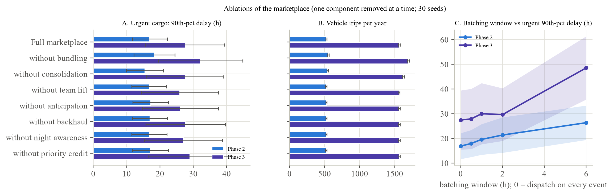
We searched 40 random weight configurations on the Phase-2 tight-fleet scenario with eight seeds and tested the best against the hand-set weights on all three phases with 30 fresh seeds (Figure 13). Across the 40 configurations the urgent 90th-percentile delay on the search set ranged from 8.0 to 12.6 h with a mean of 9.5 h; the hand-set configuration scored 11.5 h, in the bottom half. The best configuration uses a much larger urgency credit for both priority classes (29 h and 6.6 h against 6 h and 2 h), a stronger age credit, and lets bulk lots wait longer (up to 63 h). On the test seeds it improves the urgent 90th-percentile delay by 3.1 ± 1.6 h in Phase 2 and 7.4 ± 7.3 h in Phase 3, leaves Phase 1 unchanged (−0.4 ± 0.5 h), and cuts operator hours by 15 ± 6 and 96 ± 20 a year; the cost is longer bulk-lot waits (+8 to +31 h). The same-day service level moves by at most one point. We take two things from this. The mechanism's urgent-cargo performance is set mainly by its structure (pooling, team lift, night awareness, event-driven dispatch) and only secondarily by its weights, which buy a further 10–25% on the tail; and the weights that matter trade bulk-lot patience against urgent-cargo speed and operator time, which is a policy choice an operator can make per base rather than a parameter to fit.
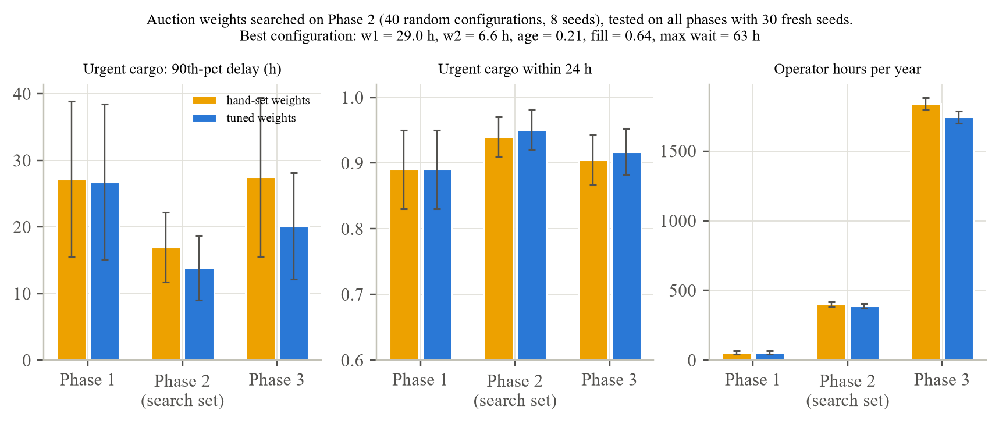
Figure 14 puts the cost side together for the Phase-2 four-vehicle marketplace cell. The annual bill is $162 million of amortised fleet and $0.4 million of operator time. Divided by the 532 t moved in the year (32 t of landed cargo and 500 t of regolith and feedstock) that is $306 per kilogram moved; divided by landed cargo alone it is $5,100 per kilogram, and $5,000 in Phase 3 with the nine-vehicle default fleet. The tornado in panel A shows that only two assumptions move this number: vehicle unit cost (±50% gives $153–458 per kg) and vehicle life (15 years or 6.7 years gives $204–458). Halving or multiplying demand by 1.5 changes it by 3%; operator cost by 1%; other duties, dark share and reliability by nothing, because they change delay, not cost. Panel B puts the surface move next to the cost of getting the kilogram to the surface: about $1.08 million per kg on a CLPS small lander (Blue Ghost Mission 1), about $78,000 on a fully loaded Blue Moon MK1 and SpaceX's published $100,000 for Starship. Moving a kilogram across the base costs 0.5–6.5% of landing it.
Three things follow for anyone pricing the service. The marginal cost of a job is small and the fixed cost is enormous, so prices will be set by capacity commitments rather than by job costs, as in contract trucking rather than the spot market. Dispatch quality shows up as fleet size, not operating cost: the difference between a four-vehicle pooled fleet and an eight-vehicle in-house fleet that still misses the target is the economic content of the mechanism comparison. And the service is cheap relative to what it protects: a day's delay on a $1 million-per-kilogram crate is worth far more than the few thousand dollars it costs to move it, which is why urgent-cargo delay rather than cost is the right primary metric for this market.
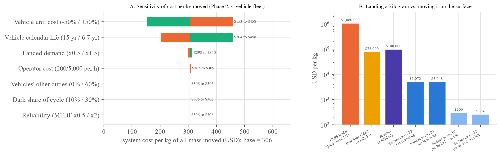
Landings are published months ahead, so a marketplace can send an idle vehicle to the pad before touchdown. We expected a gain and found none (Figure 17). Across five fleet-and-phase cells the paired change in urgent 90th-percentile delay from switching anticipation on is between −0.7 ± 0.7 h and +1.3 ± 1.5 h, and in mean delay between −0.4 ± 0.5 and +0.2 ± 0.2 h; the same-day service level changes by at most one point. The vehicles make 3–10 staging moves a year and drive 8–31 extra empty kilometres. Three facts explain the null result. The base is compact: a vehicle at the depot reaches either pad in 20–30 minutes, which is small against offload windows of 6–72 h. Vehicles are idle most of the time, so one is usually free when the first item is ready. And the first items off a lander are rarely the urgent ones that dominate the tail. Anticipation would matter at a base whose depot is many kilometres from its pads, or at utilisations far above anything Phase 2 produces; at this base it is a cost without a benefit, and we report it as such.
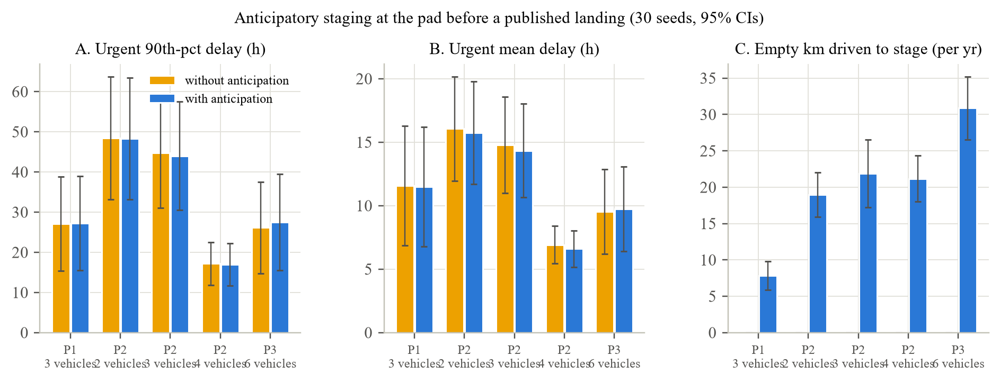
Section 6.4 measured the immovable share for three fleets we chose. Figure 15 removes the fleet from the question. For each phase we drew 300 years of manifests from the cargo classes of Table 2 and NASA's lander cadence, and computed the share of landed mass whose items weigh no more than a given capacity. The curve is a property of the demand model alone and reads directly as a design requirement. In Phase 2, a rover limited to 800 kg (the LTV's full-performance cargo) can move 23% of landed mass; at 1,600 kg (reduced performance), 40%; two LTVs lifting together (3,000 kg), 55%; three (4,500 kg), 64%; a 10-tonne hauler, 88%; a hauler with two LTVs (13,000 kg), 95%; and only a 15-tonne capability reaches 100%. Phase 3 is harder at every rung (16%, 30%, 44%, 57%, 85%, 94%, 100%) because large landers bring a larger share of elements; Phase 1 is easy (63% at 800 kg, 89% at 1,600 kg, 100% at 2,000 kg) because nothing heavier than 2 t lands. The ladder also shows why team lift pays twice: it lifts the LTV-only fleet from 40% to 55–64% of the manifest, and it lifts a single-hauler fleet from 88% to 95%.
Two consequences are worth stating plainly for vehicle designers. First, the 1,600 kg reduced-performance mode of the current LTVs is worth 17 points of Phase-2 manifest over the 800 kg full-performance mode, which is more than any dispatch improvement in this paper. Second, the step from a 10-tonne to a 15-tonne hauler buys the last 12% of the manifest, which is exactly the habitats and power units the base exists to install; a procurement that stops at 10 t will still need a second solution for them.
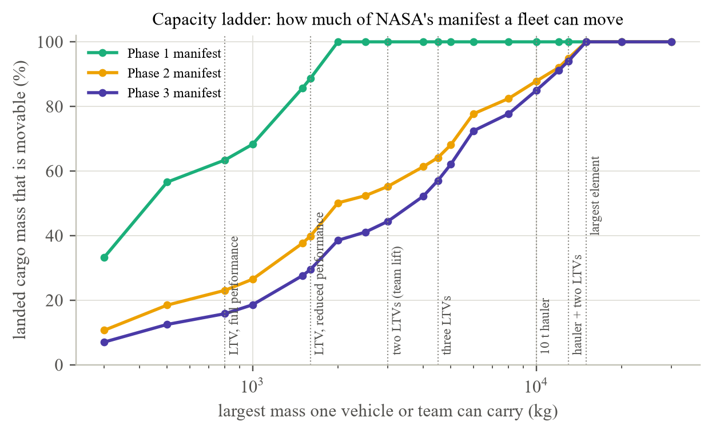
Section 6.3 varied owners with one fleet. Figure 16 varies fleet size, owners and other duties together: fleets of 4, 6 and 8 LTVs, split among 1 to 8 owners, with 0%, 30% or 60% of vehicle time on other duties, 45 in-house cells in all. Plotted against a single quantity, the effective number of vehicles per owner e = N(1 − d)/k, the in-house urgent 90th-percentile delay collapses onto one curve: 25.1 + 20.5/e hours fits the 45 cell means with R² = 0.84, and the scatter around it is of the size of the cells' own confidence intervals. The constant is the delay a single owner with plenty of vehicles still suffers (nights, offload windows, travel); the 1/e term is the fragmentation penalty. A fleet split so that each owner has fewer than one effective vehicle pays 20–50 h on the tail; at two effective vehicles per owner the penalty is 10 h; at four it is 5 h. The marketplace's delay in the same fleets is flat at the single-owner value (32–41 h for these all-LTV fleets, which strand their heaviest items and so have a higher floor than the mixed fleets elsewhere in the paper).
The law gives a planner a rule of thumb that the simulation cells alone do not: to know whether pooling will matter at a base, count effective vehicles per owner. NASA's Phase-1 plan, two LTVs owned by two companies that will spend most of their time on NASA crew work, has e ≈ 0.7 and sits on the steep part of the curve; a single integrator running four rovers full-time has e = 4 and would gain little from a marketplace. Panel B shows the same thing as a pooling gain: zero at one owner for every fleet and duty level, rising to 20–38 h at six to eight owners.
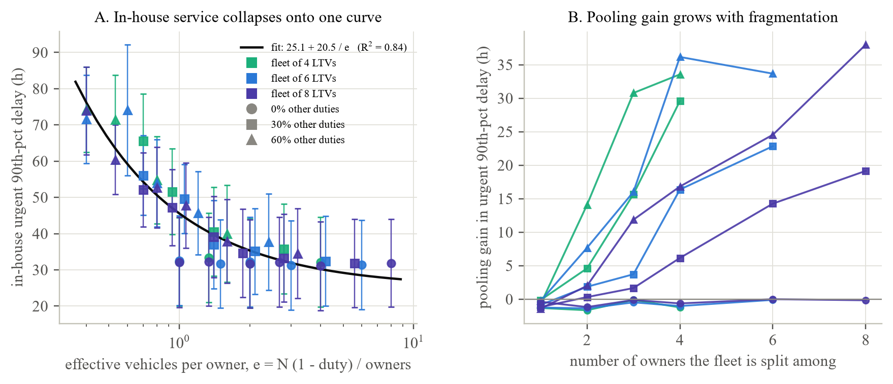
Thirty replications rank the mechanisms but cannot pin a mean to a decimal. Figure 18 shows how the 99% confidence interval of the Phase-2 estimates narrows as replications are added, for all four mechanisms, up to the 4,000-replication cap of the first run. The same-day service level, the delivered share and the cost per kilogram settle to within 1% of their means by a few hundred replications. The mean urgent delay needs far more: at 4,000 replications its 99% half-width is still 2.8% in-house and 3.3–3.5% for the pooled rules, while the 90th-percentile delay is at 3.2–4.8%, inside its 5% target. The heavy tail of delays, driven by the few items that wait through a night, is what makes the mean slow to settle. {{E14_LONG}} Table 7 lists the settled estimates.
The settled Phase-2 estimates are the ones quoted in Section 6.1: mean urgent delay {INH_MEAN} ± {INH_MEAN_HW} h in-house, {GRD_MEAN} ± {GRD_MEAN_HW} h pooled greedy, {BAT_MEAN} ± {BAT_MEAN_HW} h batched assignment and {MKT_MEAN} ± {MKT_MEAN_HW} h marketplace; 90th percentiles {INH_P90} ± {INH_P90_HW}, {GRD_P90} ± {GRD_P90_HW}, {BAT_P90} ± {BAT_P90_HW} and {MKT_P90} ± {MKT_P90_HW} h; same-day service levels {INH_SL} ± {INH_SL_HW}, {GRD_SL} ± {GRD_SL_HW}, {BAT_SL} ± {BAT_SL_HW} and {MKT_SL} ± {MKT_SL_HW} (all 99% CIs). At that precision every pairwise difference among the four rules is distinguishable from zero, including the marketplace's {MKT_VS_GRD_PCT}% advantage over greedy pooling that the 30-seed cells left in doubt.
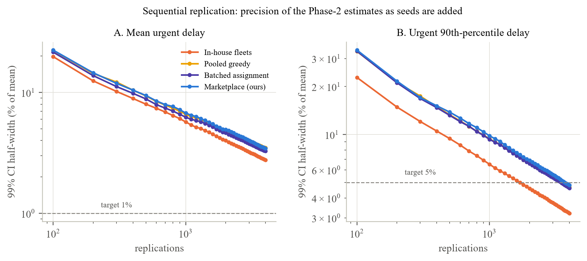
The simulations say what a dispatch layer should do; this section says what the service around it should look like. Figure 19 shows the reference design. It has three layers, a small number of rules that the experiments justify, and a rollout tied to NASA's phases. We write it as a specification a team could build to, not as a vision.
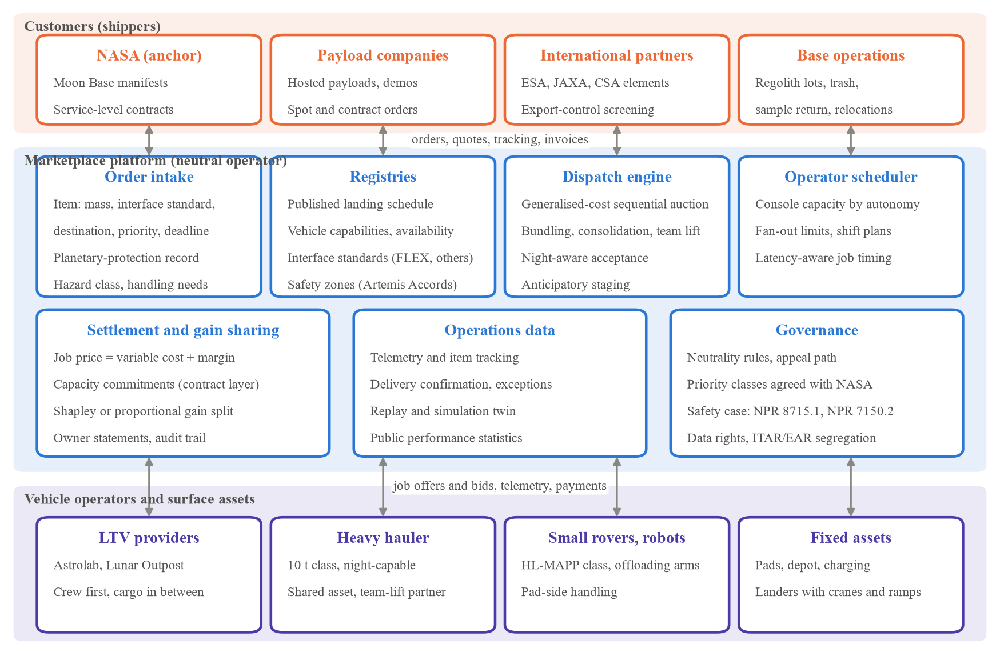
Customers are whoever owns cargo on the surface: NASA as the anchor customer with service-level contracts, payload companies with hosted demonstrations, international partners with elements of their own, and base operations itself for regolith, trash, samples and relocations. Vehicle operators own and maintain rovers and sell their time; in Phase 2 they are the two LTV providers, the owner of a heavy hauler if one is procured, and the operators of small rovers and pad-side handling robots. The platform is a neutral operator that owns no vehicles and no cargo. Neutrality is not decoration: Section 6.3 shows that the value of the service comes entirely from pooling across owners, and an owner-run platform would have both the means and the motive to favour its own fleet.
Order intake records, for every item, its mass, interface standard, destination, priority class and deadline, its planetary-protection organics record (required for items bound for shadowed sites under NPR 8715.24), its hazard class and handling needs. Items are the unit of the market; manifests are bundles of items. Registries hold the published landing schedule, every vehicle's capabilities and availability calendar (including its owner's reserved periods), the interface standards each vehicle accepts, and the current safety zones declared under Section 11 of the Artemis Accords. The dispatch engine is Algorithm 1: a generalised-cost sequential auction with bundling, consolidation, team lift and night-aware acceptance, run on every event rather than in batches (Section 6.8), with weights set per base as a policy (Section 6.9). The operator scheduler books Earth console time by autonomy level and fan-out, because Section 6.5 shows that a pool of teleoperated rovers is operator-limited before it is vehicle-limited. Settlement and gain sharing prices jobs at variable cost plus a margin, holds the contract layer of capacity commitments that Section 6.10 says will carry most of the revenue, and splits pooled gains among owners by a published rule (Shapley or proportional) so that every owner is better off inside the pool than outside it. Operations data tracks where every item is, confirms deliveries, logs exceptions and keeps a replayable record; the simulation twin, this testbed with the live manifest and fleet loaded, runs alongside to forecast the week and to test rule changes before they are applied. Governance publishes the neutrality rules and the appeal path, agrees priority classes with NASA, holds the safety case against NASA's software and hazard standards, and segregates export-controlled control software from the commercial order layer.
Phase 1 (through 2029): build the twin, serve by contract. Two LTVs and a handful of landings a year is not a market; e ≈ 0.7 in the fragmentation law means fragmentation hurts, but there is too little cargo for an auction to matter. The platform's job in this phase is the registries, the order and tracking layer, the operator scheduler and the simulation twin, exercised on Earth freight and on NASA's simulators, and offered to the LTV providers as the system through which they sell their idle time. Phase 2 (2029–2032): open the pool. With four to six vehicles and three or more owners the pooling gain is 20–40 h on the urgent tail and the fleet needed for a same-day service level falls from eight to four. This is when the dispatch engine goes live, when a shared hauler should be chartered, and when gain-sharing rules must be in force before the first dispute. Phase 3 (2032 onward): scale the contract layer. At 70–150 t a year with elements of 12–15 t, the binding constraints are hauler capacity and operator hours; the platform's leverage shifts to capacity contracts, the night-capable share of the fleet and the autonomy level of the vehicles it dispatches.
The platform is software plus a small operations team. On the evidence of this project, the dispatch engine, registries, order layer and twin are a few engineer-years; the safety case and export-control segregation are the long poles. We estimate the Phase-1 build at under $3 million and the Phase-2 operating cost, including a staffed operator-scheduling desk, at $3–6 million a year. Revenue scales with the fleet capital it coordinates: a platform fee of 3–5% of a $162–252 million-a-year Phase-2 fleet is $5–13 million a year, enough to run the service; in Phase 3, with a $400 million-a-year fleet, it is $12–20 million. These are estimates, not forecasts, and they depend on an anchor customer choosing to buy surface logistics as a service rather than as vehicles.
The case for a neutral dispatch layer on the Moon rests on three findings, and each comes with a condition. Pooling helps only when the fleet is fragmented, and the market NASA is building is fragmented by design: two LTV providers who may hire out their rovers between NASA missions, several payload companies, international partners, and an agency that has said it will not own the vehicles. The fragmentation law lets an operator check the condition before building: count effective vehicles per owner. The mechanism's value shows up as fleet size: at Phase-2 demand pooled dispatch holds the same service level with four vehicles that in-house contracting cannot reach with eight, and it keeps every owner's heavy items moving instead of leaving the only hauler idle while another company's habitat waits. And the components that carry those results are mundane: pool everybody's vehicles, dispatch on every event, bundle items from the same pad, hold deferrable lots for a day, never send a rover out that cannot get home before dark, and let vehicles lift together. The auction weights buy a further 10–25% on the tail; staging vehicles ahead of landings buys nothing at a base this compact.
Those conditions shape the business. The customer base will be small for a decade, and the anchor customer will be NASA; the Earth analogue is contract trucking with a thin spot layer, not a ride-hailing app [27]. Revenue scales with fleet capital, not with job counts, so a platform fee of a few percent of the fleet's annual cost is the plausible unit (Section 7.5). The platform's technical core is the dispatch rule, the operator scheduler and the data model (manifests, interfaces, organics inventories for shadowed sites, safety-zone geometry under the Artemis Accords [51]); the export-control status of rover command software [52] decides who may run it and from where.
For Roatify specifically, the results support the staged plan we set out before this study: build and run the dispatch platform on Earth freight now, where data and customers exist; test the lunar version in simulation with NASA's published numbers and with rover makers, which is what this paper and its browser testbed do and what NASA's NextSTEP-3 demonstrations require at TRL 6; and launch the surface marketplace when Phase 2 brings enough vehicles and owners for pooling to matter, which the fragmentation law places at fewer than two effective vehicles per owner. The later ambition of building a heavy hauler is also sharpened by the capacity ladder: a 10-tonne vehicle moves 88% of the Phase-2 manifest and a 15-tonne one all of it, and one shared hauler does most of the work of two private ones.
Four of NASA's stated gaps appear in the results with numbers attached. “Multiple robotic mobility systems working together” recovers about half of the mass an LTV-only fleet cannot move. “High capacity mobility systems” are the only way to move the other half, and the capacity ladder says how much capacity: 10 t for 88% of the Phase-2 manifest, 15 t for all of it. “Autonomy or tele-robotic operation throughout the year” is a factor-of-two to factor-of-three lever on urgent delay and a factor of seven to thirty on operator hours. And a shared dispatch layer is what makes the agency's intention to let LTV providers serve other customers produce a service rather than two private taxis; the fragmentation law says the Phase-1 fleet, at about 0.7 effective vehicles per owner, is exactly where that matters.
The testbed answers the questions it was built for and leaves three undone. First, an operations demonstration: the dispatch rule running against a higher-fidelity rover simulator with terrain, lighting and a lander manifest for a real Phase-2 mission, which is the TRL 6 artefact NASA's Appendix B asks for. The browser testbed is a step toward it; the next is integration with an existing simulator such as the CARLA-based lunar environment used for NASA's autonomy challenge. Second, a payments and gain-sharing layer: the auction here pays variable cost and reports revenue shares; a real market needs prices that owners will accept and a rule for splitting pooled gains that keeps every owner better off than in-house, for which the collaborative-routing literature offers Shapley-value and proportional rules [9, 10]. Third, strategic behaviour: our vehicles bid their true cost. Whether owners would, and what the mechanism should do if they do not, is an open question that matters more as the market thickens.
The model is a simplification in ways that could change the numbers, though we think not the ordering of the mechanisms. Terrain is a nine-node graph with three slope classes and a fixed tortuosity; real traverse times at a specific site will differ, and we did not model dust, obstacle fields or trafficability by mass, which NASA says make heavy transport “exponentially more difficult” [2]. Speeds rest on a 6 km/h autonomous average that is our assumption and a teleoperation table with four published points. Demand is Poisson, so it reproduces NASA's annual totals but not the fact that CLPS task orders have slipped by 14 months on average [38]; a real year may have half or twice the landings we draw. Bulk flows are our assumption anchored to the IPEx excavation rate; they drive utilisation but not the urgent-cargo results. Costs are built from two contract values and a published Starship price; the hauler's cost is a guess, and Section 6.10 shows the cost results scale with it. Offloading is a delay, not a resource; cranes, interfaces and lander geometry could create queues we do not see. Night is a single block per cycle at a fixed fraction, where real polar sites have several shorter eclipses. Energy never bound in these scenarios and may bind for longer traverses. Vehicles' other duties are random blocks; real crew schedules are known in advance and a dispatcher could plan around them. The mechanism assumes truthful cost bids and does not model payments, safety-zone deconfliction or communication outages. The fragmentation law is fitted on one base layout and one demand model; its constant will differ elsewhere, though we expect the 1/e form to hold. Verification shows the engine does what it is specified to do; it does not show that the specification is the Moon. Finally, every result is for one Earth year from an empty base; confidence intervals are wide where landings are few, and several marketplace-versus-greedy differences in the thin Phase-1 setting are not distinguishable from zero at 30 seeds. We report them that way.
A dispatch marketplace decides whose cargo moves first and whose vehicle earns. In our runs the generalised-cost bid favours cheap, slow vehicles for deferrable lots and fast ones for urgent items, which is efficient but means that an owner of small, slow rovers earns only low-value work; a real platform will need a visible gain-sharing rule and an appeal path, or small suppliers will not join. Night-aware dispatch protects vehicles at the cost of delaying cargo; who bears that cost should be explicit in contracts. Operating other companies' vehicles raises export-control questions that we flag but do not resolve. On the positive side, pooling spreads revenue more evenly than bilateral contracting (Section 6.1) and keeps heavy items moving for owners who have no hauler of their own.
Everything needed to reproduce this paper is in the repository: the simulator, the scenario definitions, the seed lists, the experiment runner that produced every CSV, the figure scripts that produced every figure and table, the verification test-suite, the parameter notes with sources, and the browser version with its cross-implementation check. Each cell's seeds are 0–29 (0–19 for the latency suite; 0–7 for the weight search; 0 to n for the sequential runs); the demand stream uses the cell seed and the operations stream the seed plus 100,003. Runs are deterministic given a seed. A full rerun of the fourteen suites takes about 40 minutes on a 12-core desktop.
We asked whether a lunar logistics marketplace is a real thing or a sentence in a planning document, and built a verified testbed to find out. Four answers hold across 8,000 simulated years. Pooling vehicles across owners roughly halves the delay of urgent cargo and keeps every owner's heavy items moving, but only when the fleet is fragmented: the in-house penalty follows 20/e hours in the effective number of vehicles per owner, zero for an integrator and 20–50 h for the fleets NASA is actually buying. A same-day service level at Phase-2 demand needs four pooled vehicles and is out of reach for eight in-house ones, in a market where the fleet is 99% of the cost; a surface move costs $300 per kilogram moved or about $5,000 per kilogram of landed cargo, a few percent of what landing it costs. Three limits are beyond any dispatch rule, and the capacity ladder gives the first of them a number: 1.6-tonne rovers move 40% of the Phase-2 manifest, two lifting together 55%, a 10-tonne hauler 88%, and only 15 tonnes of capacity moves all of it; teleoperation from Earth works at lunar latency with a staffed operator pool and collapses at Mars-like latency; and nights, not faults, are the environmental hazard that dispatch must plan around. Among the ideas we tested, batching, anticipatory staging, priority credits and backhaul did not help, and we say so. The reference design in Section 7 turns these findings into a buildable service with a rollout tied to NASA's phases. The next steps are an operations demonstration against a high-fidelity rover simulator, a payments and gain-sharing layer, and a treatment of strategic bidding.
Acknowledgements. The literature search, simulator, experiments, browser testbed and drafting were carried out by the author with Claude (Anthropic) as a research assistant running multiple parallel research agents; all numbers were produced by the released code, all sources were checked against the cited documents, and unverified items are marked in Appendix A.